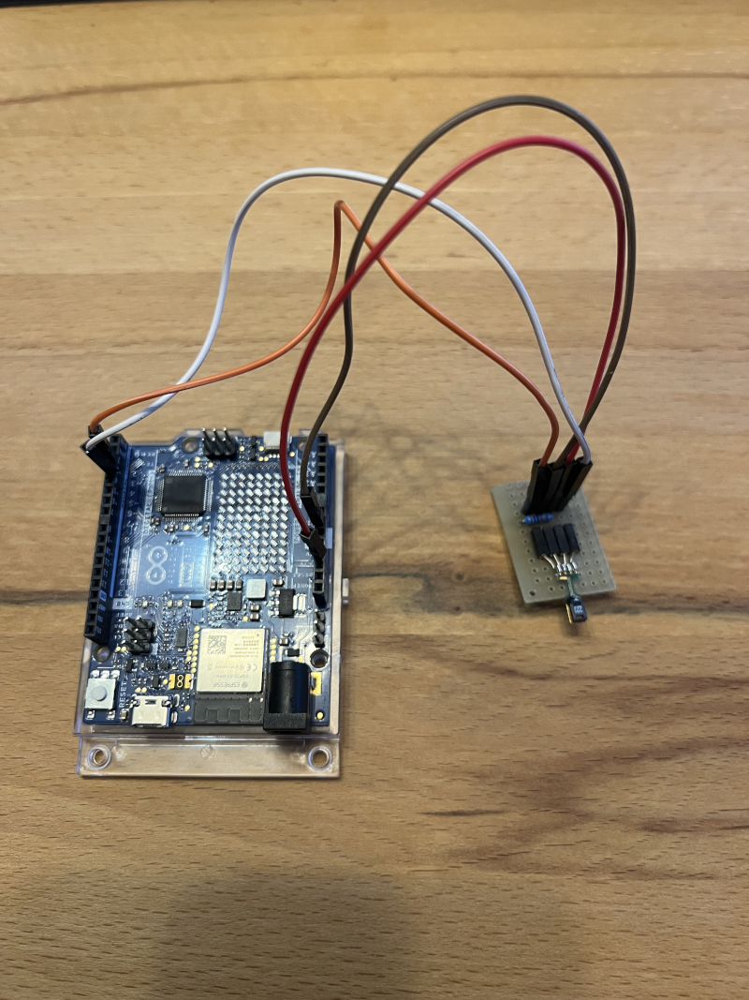
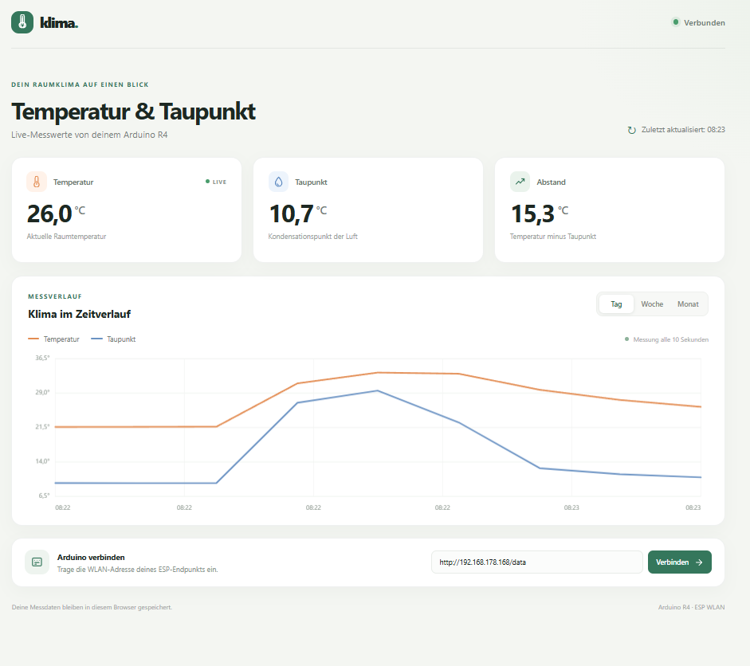

My First Arduino Project (100% Built with AI)
An Arduino Uno R4 WiFi with a humidity sensor

The Webpage
The webpage is hosted locally via the Arduino's built-in Wi-Fi module.
It updates automatically every 10 seconds.

Project Details
- Development Time: Both the Arduino code and the hosted webpage were created in under 30 minutes using AI.
- Hardware: Arduino Uno R4 WiFi, Sensirion SHT1x Temperature & Humidity Sensor (SHT10/11/15)
- Features: Real-time temperature, humidity, and dew point tracking
← Back to Portfolio